Create your account
Browsing the site needs nothing at all — but logging in (top right, any page) unlocks the marketplace, collections, watchlist stuff in the mod, and Rare-dle. Registration takes your real Minecraft username, since that's how the site links your listings and mapart back to you.
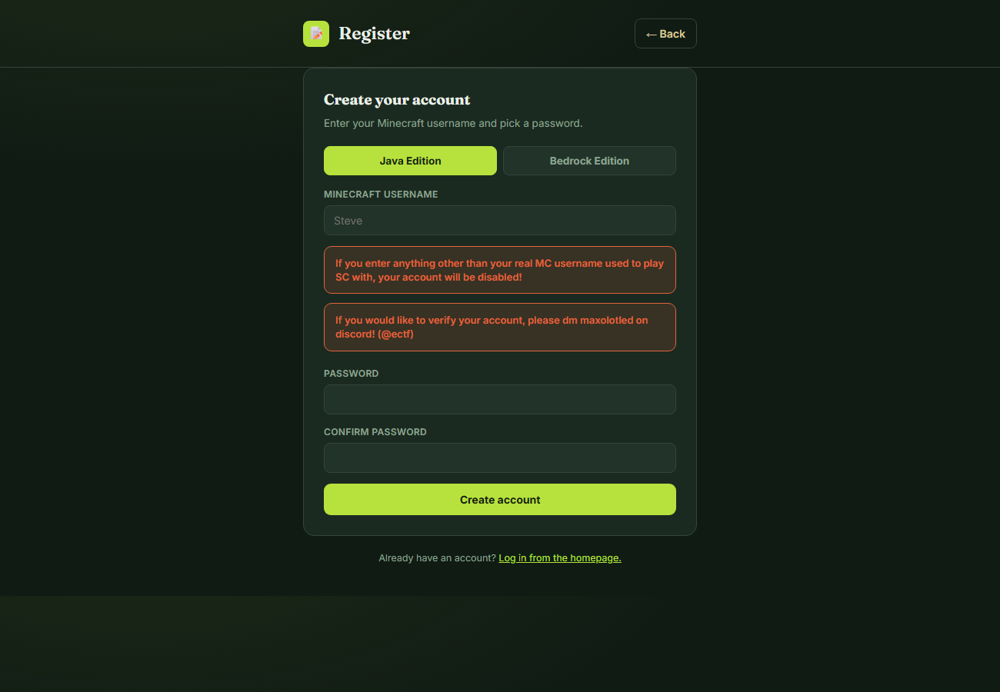
Click Log in in the top-right corner of any page to open this:
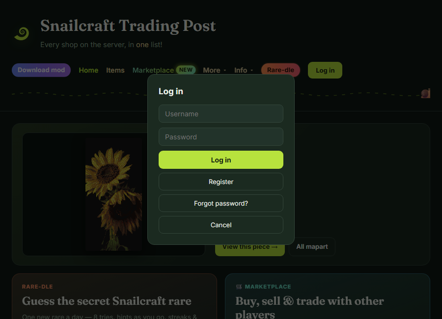
Search & browse listings
The home page is a live, searchable table of every shop listing the mod has ever scanned — both worlds, updated continuously as people play. Search by item, base item, or seller name, then filter and sort from there.

- The promo strip up top always has today's featured mapart, a Rare-dle teaser, and a marketplace ad.
- Recent & saved searches live under the "Recent ▾" dropdown next to the search box.
- Every column can be hidden from the results table if you only care about a few of them.
- Prices in a foreign currency (diamond blocks, stacks) convert to a diamond-equivalent automatically — toggle it off per-table if you'd rather see raw prices.
The Item Library & rare items
/items/ has three tabs: every vanilla item, every cataloged rare (SC's custom collectibles/wearables/useables), and the mapart catalog. Rares get their own filter set — category, source, release date, type/slot, dyeable, and glow particles.
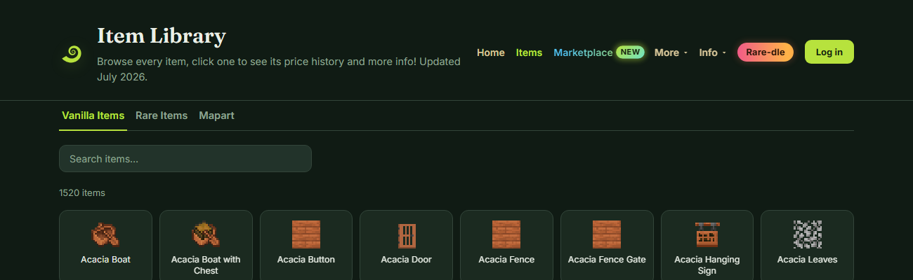
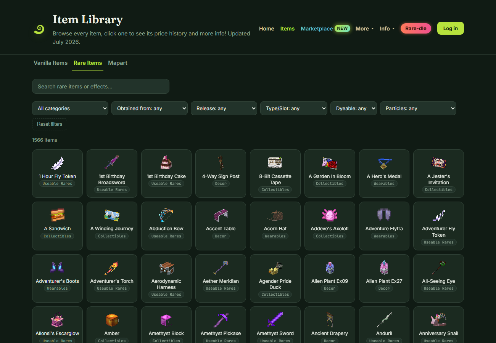
Type a name to search, or stack the dropdown filters — "Obtained from: Aquatic Crate" plus "Particles: any glow" narrows it down fast. Click any card to open its detail page.
Item pages & price history
Every item — vanilla or rare — has its own page: a live price check across both worlds, full attribute list, and price/stock charts going back as far as the daily snapshot history reaches.
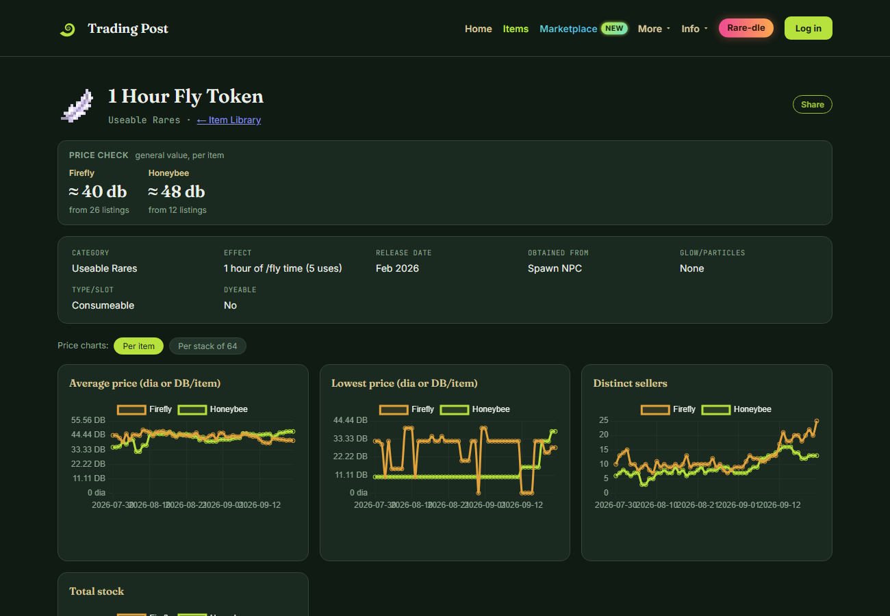
- Price check at the top gives a general value per item, averaged from every active listing — handy before you buy or sell something you don't have a feel for the price of.
- Charts switch between per item and per stack of 64 pricing with one click.
- Below the charts, the full listing table for that item shows every seller currently stocking it, with a "did you mean…" nudge if your search was close but not exact.
Mapart catalogNEW in 2.0
Every piece of mapart anyone's found around Snailcraft, with who made it, where to buy it, and a picture — searchable by title, artist, category, world, or by uploading a reference image to find visual matches.


- Search by image lets you drop in a screenshot and find visually similar mapart already in the catalog.
- Pieces with a ✓ verified by artist badge have been claimed by their maker (Mapart Management, in the account menu) — unclaimed ones can be claimed the same way if it's yours.
- Spot something wrong (wrong artist, wrong world/category, or an inappropriate image)? Hit Report right on the page.
- Collab pieces list every artist; commissioned pieces show who commissioned it and the price, if the artist added one.
CollectionsNEW in 2.0
A personal checklist of rare items and mapart you own, per world. Toggle anything on from its card or detail page, then track progress from one place under Collections in the account menu.
Once you're logged in, a small toggle chip appears on rare item and mapart detail pages (and a round toggle in the corner of grid cards):
Click once to mark it owned in that world, click again to remove it. Your collection page groups everything by kind and world, and can be set private from Account Settings if you'd rather keep it to yourself.
- Works for both rare items and mapart, tracked separately per world (Firefly / Honeybee).
- Anyone can view someone else's public collection at
/collection/<username>. - Your own collection page (
/collection/) doubles as a checklist — tick things off as you go.
Marketplace: item listings
Post something you're selling or looking for, take bids from other players, and get notified the moment someone responds — all without leaving the site. Bidder identity stays private until you accept an offer.
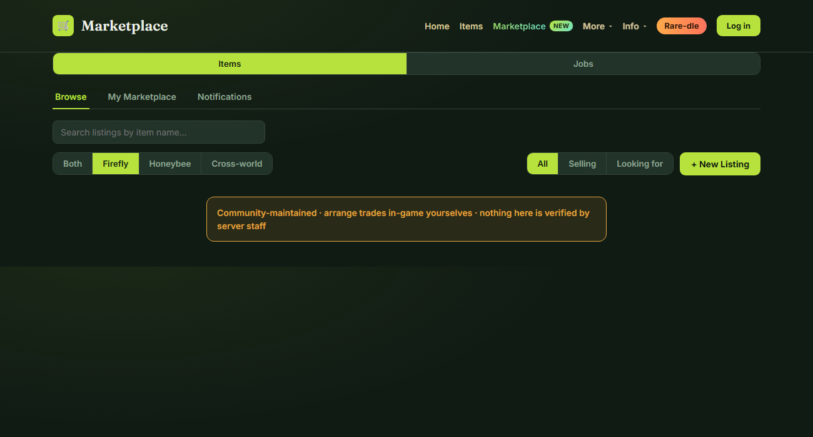
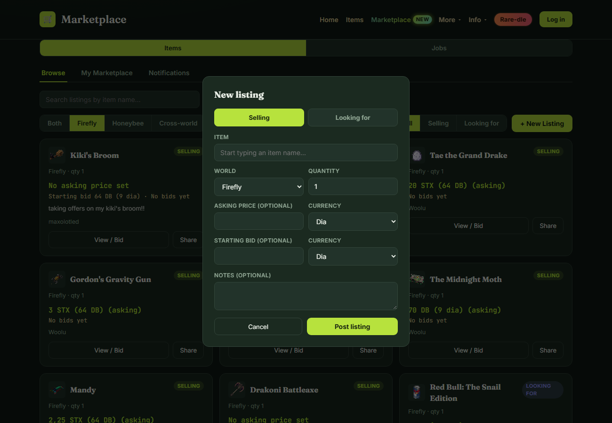
- Post as Selling (set a price, or open it to bids) or Looking for (name your budget).
- Check My Marketplace to see bids you've placed and offers you've received, and to accept/decline.
- The Notifications tab tells you the moment someone bids, gets accepted, or responds.
Marketplace: jobs & reviewsNEW
The Jobs tab is for hiring (you want a task done) or offering your own labor (For Hire). Expressing interest reveals contact info immediately on both sides — no bidding, no waiting. Every job post can now be rated with a thumbs up or down, and that feeds into the poster's overall rating on their profile.

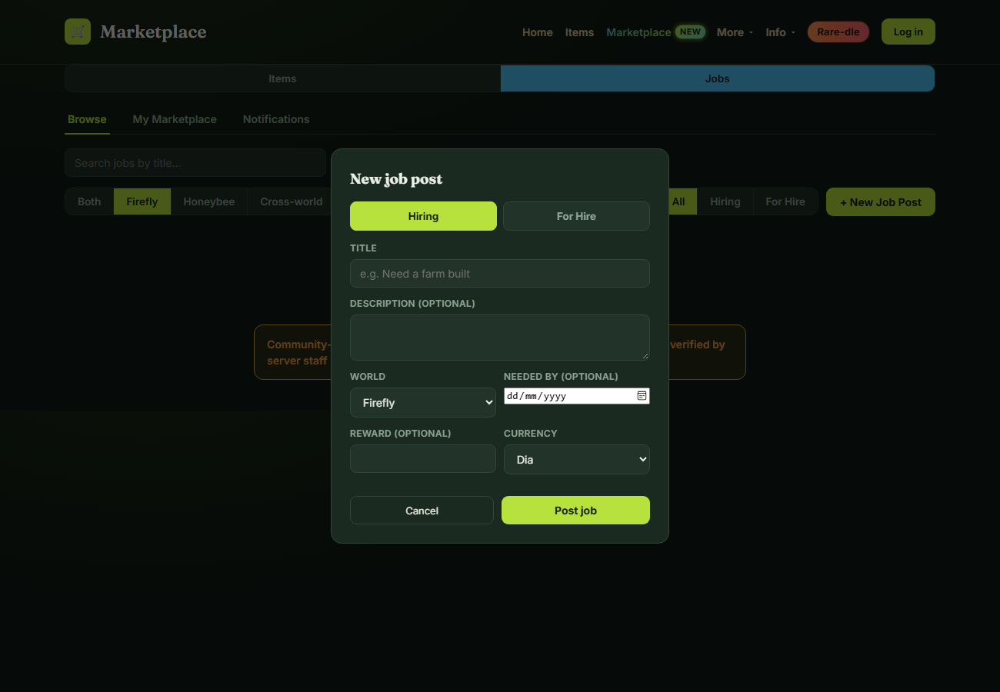
Once a job's open, its card and detail view show a rating built from everyone who's rated it:
- Anyone but the poster can rate a job (once each — rating again changes your vote).
- Ratings roll up into a seller rating shown on the poster's public profile (more on that below).
Shops & public profiles
Every seller has a shop page — their listings in one world, filterable and sortable — plus tabs for their Mapart, Collection and Marketplace history when they have any. Share a link to any player's page straight from their name anywhere on the site.

Posted job listings that have been rated add a seller rating pill to the profile header:
- Mapart artists can open commissions and add contact info — it shows right on their profile.
- "Also sells at" links between a player's Firefly and Honeybee shops when they have both.
- Filters include hiding display-only listings, converting currencies, and price/stock ranges.
Rare-dleNEW in 2.0
A daily guessing game, Wordle-style: one secret Snailcraft rare a day, same for everyone, 8 tries. Each guess compares category, release date, source, type/slot, dyeable and particles against the secret rare, plus a pixel hint that sharpens the longer you're stuck.
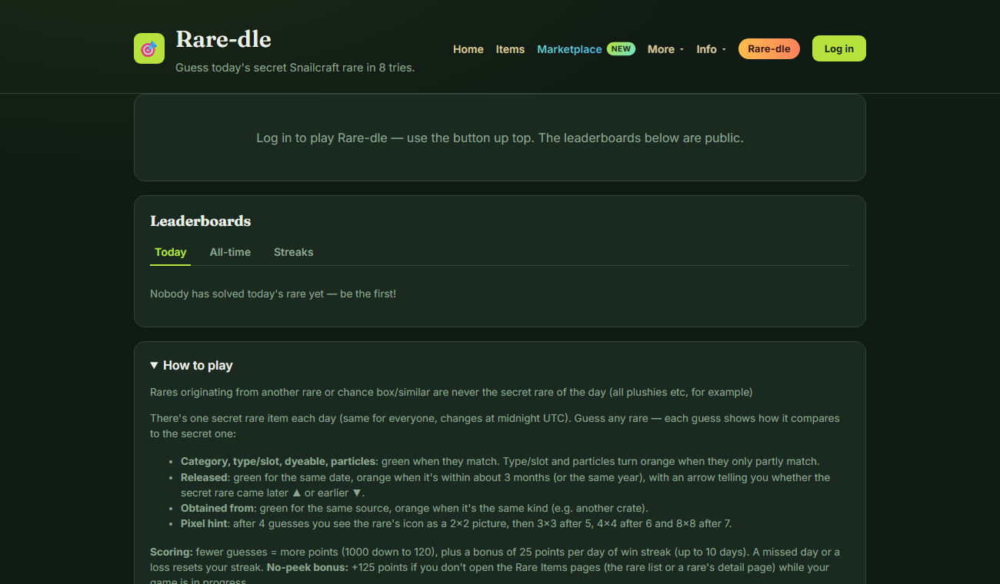
- Scoring rewards fewer guesses (1000 down to 120 points), plus a streak bonus for playing consecutive days.
- A +125 no-peek bonus applies if you don't visit the Rare Items pages while your game is in progress — no sneaking a lookup mid-guess.
- Random Practice mode lets you play unlimited unranked rounds any time, separate from the daily game.
- Leaderboards are public even if you're logged out; playing requires an account.
None of this works without the mod
Every listing on the site comes from players running the Shop Logger mod — it scans shop chests as you walk past them and uploads what it finds. No mod, no data. Grab it from the download button on the home page.
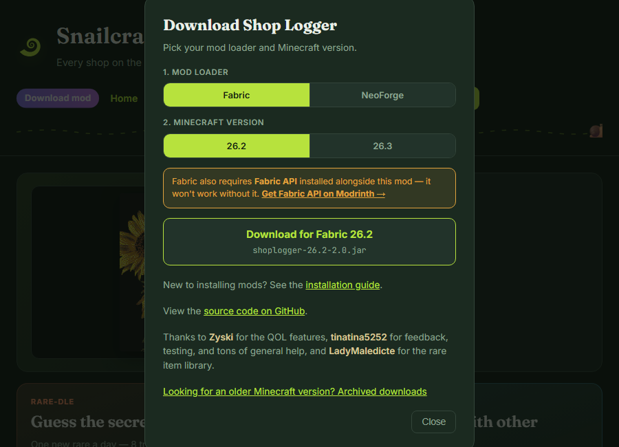
Pick your mod loader (Fabric or NeoForge) and your Minecraft version, and the right .jar downloads directly — no digging through GitHub releases.
Continue to the mod walkthrough →Stuck? Get help
The Info menu in the nav bar (top right, every page) has the FAQ, installation guide and full feature changelog. Can't find your answer there? It says right on the page who to message.
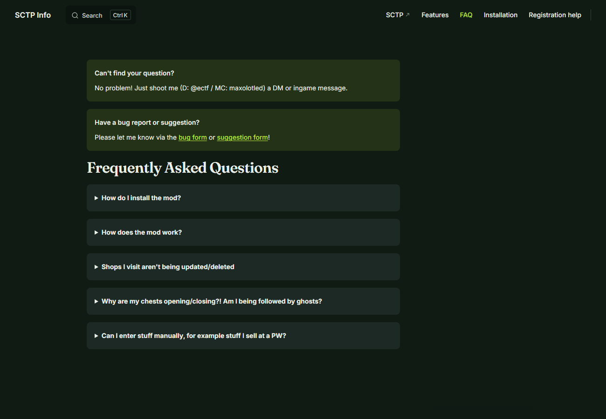